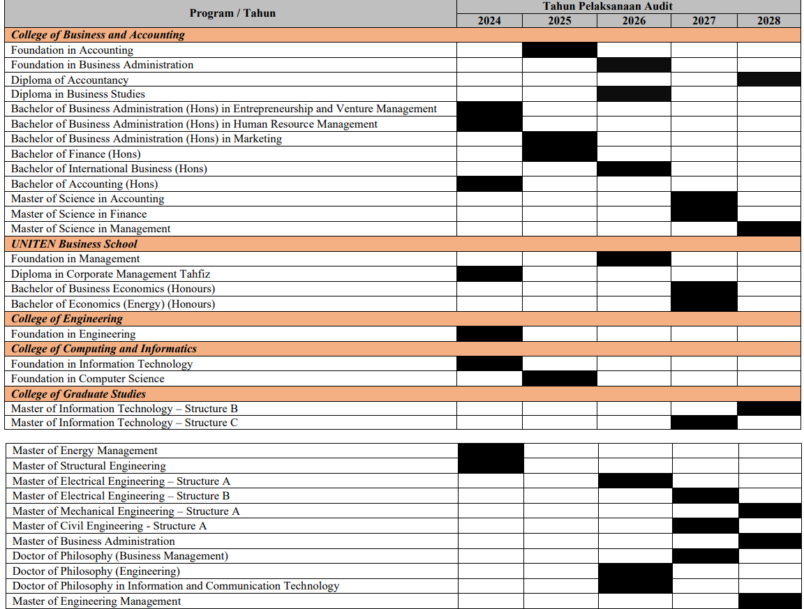
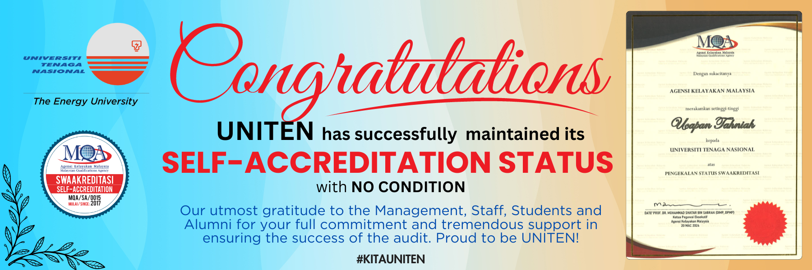

QUALITY ADVANCEMENT CENTRE
About QAC
Quality Advancement Centre (QAC) is a business unit of Universiti Tenaga Nasional (UNITEN), established to ensure and enhance the quality of education, research, and services provided by the university. QAC is responsible for the development and implementation of quality assurance policies, guidelines, and standards that align with the national and international standards. The unit also provides comprehensive quality assurance support and services to all academic and administrative units of the university, monitoring and evaluating the effectiveness and efficiency of academic and administrative processes.
TAKWIM PELAKSANAAN AUDIT PEMATUHAN PROGRAM FASA KEDUA TAHUN 2024-2028




© 2024 QUALITY ADVANCEMENT CENTRE (QAC)